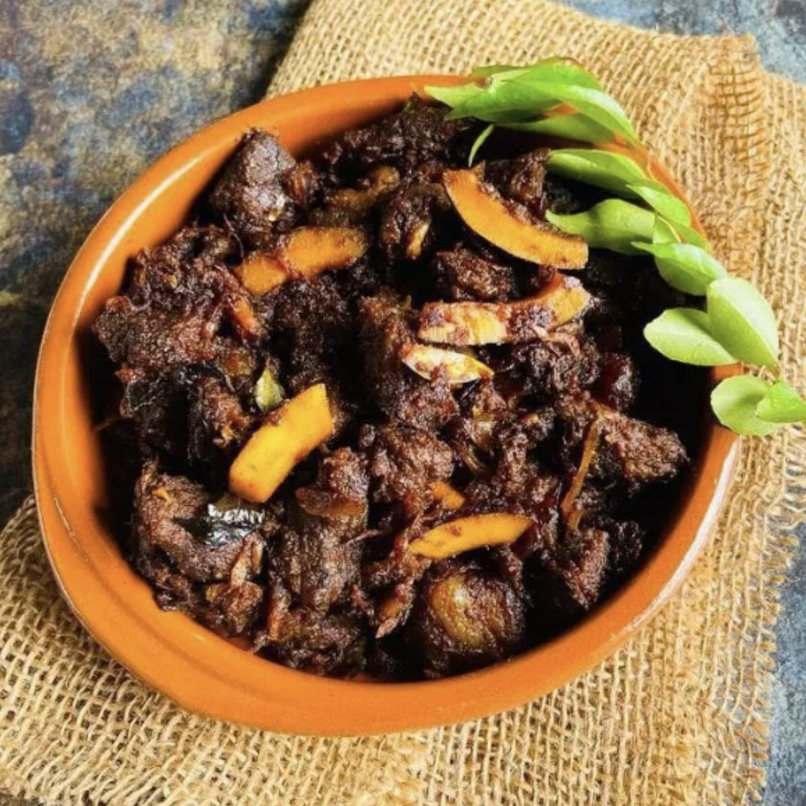

Beef Fry

Description
beef fry is a rich, dark, spice-roasted beef dish made with a fragrant blend of fennel, pepper, cardamom, cloves, cinnamon and star anise, slow cooked with onions, ginger, garlic, curry leaves and coconut bits until deeply browned. It's a signature Kerala dish, packed with bold flavour and best enjoyed hot with parotta or rice.
Ingredients
- 1 kg Beef / Mutton
- 2 tsp Fennel seeds
- 1 tsp Whole black pepper
- 4 Cardamom
- 4 Cloves
- 2 small sticks Cinnamon
- 2 petals from 1 Star anise
- a pinch Cumin
- 3 medium Onion (sliced)
- 2 tbsp Chopped ginger & garlic
- 4-5 Green chilli
- 1/2 cup Coconut bits
- 1/2 tsp Turmeric powder
- 3 tsp +1 tsp Coriander powder
- 15-20 Small / pearl onion (sliced)
- Curry leaves
- Salt
- Coconut oil
Steps
- Dry roast fennel seeds, whole black pepper, cardamom, cloves, cinnamon, cumin and star anise for 3-4 mins or till the roasted aroma comes.
- Let it cool and grind to a fine powder, using grinder or in a mortar and pestle.
- Marinate cleaned beef with 2 tsp of ground spices, turmeric powder, coriander powder (3 tsp), onion, ginger, garlic, green chilli, coconut bits, salt and curry leaves.
- Add 1/2 cup water to this and pressure cook the beef till done (refer notes).
- Heat oil in a deep and wide pan. Add sliced small onion and curry leaves. Fry till the small onion becomes brown.
- Add 1/2 – 1 tsp of ground spices and 1 tsp of coriander powder. Fry for 2 mins.
- Add cooked beef along with the stock (cooking water).
- Bring it to boil, reduce flame to lowest. Cover and cook for 7 – 10 mins.
- Remove the lid and continue to cook till the beef becomes darker in colour. It might take another 8-10 mins.
- Add 1-2 tbsp of hot water in between to retain the moisture. You can also add oil in between.
- Cook till the beef is roasted nicely and is dark in colour. Please note that the colour deepens as it rests.
Home